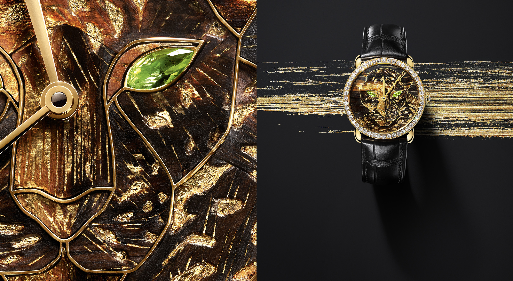
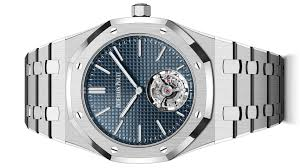
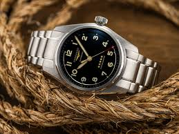

HAND MADE CRAFTS

Handmade wristwatches are precisely and elegant crafted timepieces, where skilled artisans design and assemble each component by hand, ensuring uniqueness and high-quality craftsmanship.
STAINLESS STEEL

Stainless steel is a durable, corrosion-resistant steel made primarily of iron, carbon, and chromium, known for its strength, versatility, and resistance to rust and stains.
TITANIUM WATCHES

Titanium watches are lightweight, highly durable, and corrosion-resistant timepieces, often recommended for their strength and allergy-free properties.